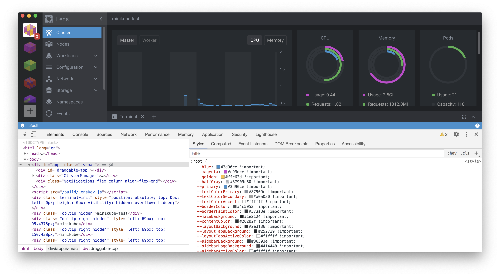
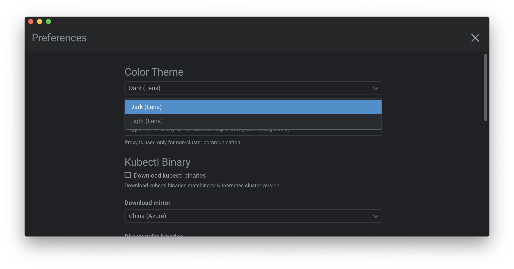

Styling an Extension
Lens provides a set of global styles and UI components that can be used by any extension to preserve the look and feel of the application.
Layout
For layout tasks, Lens uses the flex.box library which provides helpful class names to specify some of the flexbox properties. For example, consider the following HTML and its associated CSS properties:
<div className="flex column align-center"></div>
div {
display: flex;
flex-direction: column;
align-items: center;
}
However, you are free to use any styling technique or framework you like, including Emotion or even plain CSS.
Layout Variables
There is a set of CSS variables available for for basic layout needs.
They are located inside :root and are defined in app.scss:
--unit: 8px;
--padding: var(--unit);
--margin: var(--unit);
--border-radius: 3px;
These variables are intended to set consistent margins and paddings across components. For example:
.status {
padding-left: calc(var(--padding) * 2);
border-radius: var(--border-radius);
}
Themes
Lens uses two built-in themes defined in the themes directory – one light and one dark.
Theme Variables
When Lens is loaded, it transforms the selected theme's json file into a list of CSS Custom Properties (CSS Variables).
This list then gets injected into the :root element so that any of the down-level components can use them.

When the user changes the theme, the above process is repeated, and new CSS variables appear, replacing the previous ones.
If you want to preserve Lens's native look and feel, with respect to the lightness or darkness of your extension, you can use the provided variables and built-in Lens components such as Button, Select, Table, and so on.
There is a set of CSS variables available for extensions to use for theming.
They are all located inside :root and are defined in app.scss:
--font-main: 'Roboto', 'Helvetica', 'Arial', sans-serif;
--font-monospace: Lucida Console, Monaco, Consolas, monospace;
--font-size-small: calc(1.5 * var(--unit));
--font-size: calc(1.75 * var(--unit));
--font-size-big: calc(2 * var(--unit));
--font-weight-thin: 300;
--font-weight-normal: 400;
--font-weight-bold: 500;
as well as in the theme modules:
--blue: #3d90ce;
--magenta: #c93dce;
--golden: #ffc63d;
--halfGray: #87909c80;
--primary: #3d90ce;
--textColorPrimary: #555555;
--textColorSecondary: #51575d;
--textColorAccent: #333333;
--borderColor: #c9cfd3;
--borderFaintColor: #dfdfdf;
--mainBackground: #f1f1f1;
--contentColor: #ffffff;
--layoutBackground: #e8e8e8;
--layoutTabsBackground: #f8f8f8;
--layoutTabsActiveColor: #333333;
--layoutTabsLineColor: #87909c80;
...
These variables can be used in the following form: var(--magenta).
For example:
.status {
font-size: var(--font-size-small);
background-color: var(--colorSuccess);
}
Theme Switching
When the light theme is active, the <body> element gets a "theme-light" class, or: <body class="theme-light">.
If the class isn't there, the theme defaults to dark. The active theme can be changed in the Preferences page:

There is a way of detect active theme and its changes in JS. MobX observer function/decorator can be used for this purpose.
import React from "react"
import { observer } from "mobx-react"
import { App, Component, Theme } from "@k8slens/extensions";
@observer
export class SupportPage extends React.Component {
render() {
return (
<div className="SupportPage">
<h1>Active theme is {Theme.getActiveTheme().name}</h1>
</div>
);
}
}
Theme entity from @k8slens/extensions provides active theme object and @observer decorator makes component reactive - so it will rerender each time any of the observables (active theme in our case) will be changed.
Working example provided in Styling with Emotion sample extension.
Injected Styles
Every extension is affected by the list of default global styles defined in app.scss. These are basic browser resets and element styles, including:
- setting the
box-sizingproperty for every element - default text and background colors
- default font sizes
- basic heading (h1, h2, etc) formatting
- custom scrollbar styling
Extensions may overwrite these defaults if needed. They have low CSS specificity, so overriding them should be fairly easy.
CSS-in-JS
If an extension uses a system like Emotion to work with styles, it can use CSS variables as follows:
const Container = styled.div(() => ({
backgroundColor: 'var(--mainBackground)'
}));
Examples
You can explore samples for each styling technique that you can use for extensions: